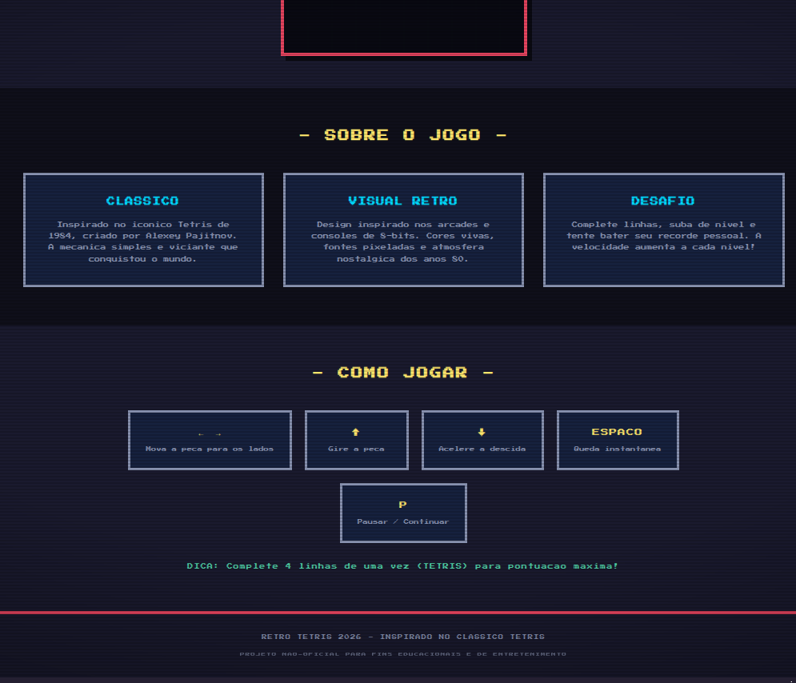
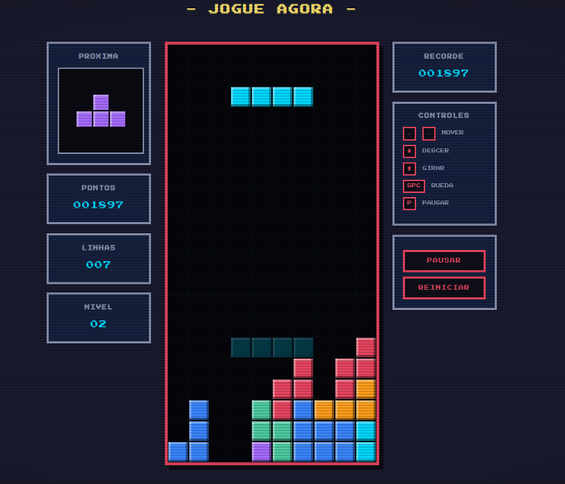

Tetris
Tetris é um dos jogos eletrônicos mais populares, influentes e vendidos de toda a história, acumulando mais de 520 milhões de cópias comercializadas mundialmente
um jogo gratuito clássico
Imagens do Jogo
um jogo simples com layout simples e indicativo, todas as regras e botões/teclas usadas para jogar estão indicadas, abaixo da tela principal do jogo tem intruções de como jogar

